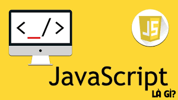
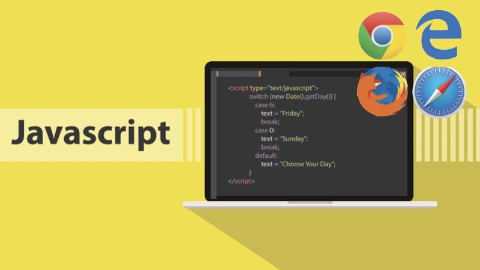

JavaScript là gì?
JavaScript là ngôn ngữ lập trình phổ biến dùng để tạo ra các trang web tương tác. Được tích hợp và
nhúng vào HTML giúp
website trở nên sống động hơn. JavaScript đóng vai trò như một phần của trang web, thực thi cho phép
Client-Side Script
từ phía người dùng cũng như phía máy chủ (Nodejs) tạo ra các trang web động.

JavaScript là một ngôn ngữ lập trình thông dịch với khả năng hướng đến đối tượng. Là một trong 3 ngôn
ngữ chính trong
lập trình web và có mối liên hệ lẫn nhau để xây dựng một website sống động, chuyên nghiệp, bạn có
thể nhìn tổng quan như
sau:
HTML:Cung cấp cấu trúc cơ bản, hỗ trợ trong việc xây dựng layout, thêm nội dung dễ
dàng trên website.CSS:Được sử dụng để kiểm soát và hỗ trợ việc định dạng thiết kế, bố cục, style, màu
sắc,…JavaScript:Tạo nên những nội dung “động” trên website.
Cùng tìm hiểu rõ hơn ở phần dưới đây:
JS là viết tắt của JavaScript, khi có JS bạn sẽ hiểu đó đang nói đến JavaScript.
Lịch sử phát triển của JavaScript
JavaScript được phát tiển bởi Brendan
Eich tại hãng truyền thông Netscape với tên đầu tiên là Mocha. Sau đó, đổi tên thành
LiveScript và cuối cùng là JavaSript được sử dụng phổ biến tới thời điểm bây giờ.
Phiên bản mới nhất của JavaScript là ECMAScript (là phiên bản chuẩn hóa của JavaScript). Với
ECMAScript 2 phát hành năm
1998 và ECMAScript 3 được ra mắt năm 1999 và hoạt động mạnh mẽ trên mọi trình duyệt và các thiết bị
khác nhau.
Cách thức hoạt động của JavaScript trên trang web
JavaScript thường sẽ được nhúng trực tiếp vào một trang web hoặc được tham chiếu qua file .js riêng.
JavaScript là ngôn
ngữ từ phía client nên script sẽ được tải về máy client khi truy cập và được xử lý tại đó. Thay vì
tải về máy server và
sau khi xử lý xong mới phản hồi kết quả đến client.

Với hiện nay, thì các trình duyệt Internet cũng có thể hỗ trợ bạn tắt/mở JavaScript. Lúc đó bạn có
thể thấy được nếu một
trang web không có JavaScript thì sẽ như thế nào? Từ đó bạn có thể hình dung dễ dàng hơn về cách
JavaScript hoạt động.
Điểm khác biệt JavaScript với các ngôn ngữ lập trình
JavaScript được đóng vai trò như là ngôn ngữ chính trong lập trình web, ngoài ra các lập trình viên
cũng cần sự kết hợp
và áp dụng một số ngôn ngữ khác trong quá trình làm việc của mình như:
JavaScript:JS giúp tăng tính tương tác trên website. Các Script chạy trên các trình
duyệt của người dùng thay vì từ phía server và
thường được sử dụng thư viện từ bên thứ 3 nên không cần bạn phải code lại từ đầu.HTML: Hypertext Markup Language, đây là ngôn ngữ cơ bản và phổ biến mà bạn cần phải
biết khi bắt đầu với công việc lập trình
web. Dùng để xây dựng bố cục (layout) chính cho nội dung toàn bộ website.CSS : Cascadding Style Sheets giúp cho lập trình viên xác định style, tạo ra những
ý
tưởng, màu sắc, background riêng phù hợp
với chủ đề của website.PHP: Là ngôn ngữ từ phía server (JS chạy trên phía client). Thường dùng trong quá
trình quản trị nội dung nền PHP như Wordpress
và cũng có thể được sử dụng
với Backend
Cách sử dụng JavaScript
Mở đóng thẻ
Tất cả các đoạn mã JavaScript đều được đặt trong cặp thẻ đóng mở script /script. Ví dụ cụ thể như
sau:
<script language ="javascript">
alert("hello world");
</script>
Chúng ta có thể đặt thẻ script bên trong thẻ < head> hoặc vào bất cứ vị trí nào mong
muốn bên trong thẻ < body>.
Các kiểu dữ liệu trong JavaScript
JavaScript có 8 kiểu dữ liệu cơ bản, trong đó, có 7 kiểu dữ liệu nguyên thủy (
boolean, null, undefined, number, BigInt,
string, symbol ) và 1 kiểu dữ liệu dạng tham chiếu (object).
- Kiểu dữ liệu nguyên thủy:là kiểu dữ liệu mà giá trị không thể thay đổi được.
Đây là kiểu dữ liệu ứng với "level thấp nhất" của ngôn ngữ lập
trình.
- Kiểu dữ liệu tham chiếu là tập hợp của các thuộc tính (key) và giá trị (value).
Mà số lượng các key có thể thay đổi, giá trị ứng với key cũng có
thể thay đổi. Do đó, giá trị của kiểu dữ liệu tham chiếu có thể thay đổi được.
Kiểu dữ liệu boolean (kiểu logic)
Boolean là kiểu dữ liệu logic chỉ bao gồm hai giá trị là true (đúng, chính xác) và false (sai, không
chính xác), ví dụ:
let isWebLoaded = true; // => Trang web đã được tải xong
console.log(isWebLoaded); // true
let isWebLoaded = true; // => Trang web đã được tải xong
console.log(isWebLoaded); // true
Kiểu dữ liệu null
Kiểu dữ liệu null là một kiểu dữ liệu đặc biệt, chỉ bao gồm một giá trị là null, ví dụ:
let language = null;
console.log(language); // null
Trong ví dụ trên, biến language được hiểu là không biết giá trị hoặc không có giá trị.
Kiểu dữ liệu undefined
Cũng tương tự như null, undefined là một kiểu dữ liệu đặc biệt trong JavaScript, chỉ bao gồm một giá
trị undefined, ví
dụ:
let language = undefined;
console.log(language);// undefined
Kiểu dữ liệu undefined có nghĩa là giá trị chưa được gán.
Khác nhau cơ bản giữa undefined và null:
Kiểu dữ liệu null là kiểu dữ liệu được gán cho biến, thường được hiểu là không biết (không có).
Trong khi đó, kiểu dữ liệu undefined là giá trị mặc định của biến sau khi khai báo mà không gán
giá trị cho biến.
Kiểu dữ liệu number
Kiểu dữ liệu number là kiểu dữ liệu dạng số (tương tự trong toán học). Number trong JavaScript không
có cú pháp gì đặc
biệt. Bạn chỉ cần viết số ra.
JavaScript có hai loại số là: số nguyên và số thực.
let n1 = 66;// số nguyên dương
let n2 = -66;// số nguyên âm
let n3 = 3.14// số thực dương
let n4 = -3.14;// số thực âm
let n5 = 2e3// => 2*10^3 = 2000
let n6 = 2e-3;// => 2*10^(-3) = 0.002
let n7 = 0xff;số dạng hexa (hệ cơ số 16): 15*16 + 15 = 255
let n8 = 067;số dạng octa (hệ cơ số 8): 6*8 + 7 = 55
let n9 = 0b11;số dạng nhị phân (hệ cơ số 2): 1*2 + 1 = 3
Ngoài những loại số trên, JavaScript còn có 3 số đặc biệt là: Infinity, -Infinity và
NaN.
- Infinity là số dương vô cùng. Đây là giá trị đặc biệt và nó lớn hơn bất kỳ số
nào khác. Bạn có thể sử dụng giá trị này trực tiếp
hoặc thu được nó bằng cách lấy lấy số dương bất kỳ chia cho 0 (toán tử chia trong JavaScript là
/).
- -Infinity là số âm vô cùng. Đây cũng là giá trị đặc biệt và nó nhỏ hơn bất kỳ
số nào khác. Bạn có thể sử dụng giá trị này trực
tiếp hoặc thu được nó bằng cách lấy lấy số âm bất kỳ chia cho 0.
- NaN là viết tắt của Not a Number, được sử dụng để đại diện cho những trường hợp
tính toán sai hoặc kết quả của một phép tính
không xác định.
Kiểu dữ liệu BigInt
Trong JavaScript, kiểu dữ liệu number không thể biểu diễn một số nguyên lớn hơn (253-1) (bằng
9007199254740991) và nhỏ
hơn -(253-1).
Với hầu hết các trường hợp, việc sử dụng kiểu dữ liệu number là quá đủ. Nhưng đôi khi, bạn vẫn cần
biểu diễn và tính
toán với những số nguyên cực kỳ lớn. Do đó, kiểu dữ liệu BigInt ra đời nhằm giải quyết vấn đề này.
Ví dụ
const reallyBigNumber = 12345678987654321012345678987654321n;
console.log(reallyBigNumber); // 12345678987654321012345678987654321n
Kiểu dữ liệu string
String là kiểu dữ liệu dùng để biểu diễn chữ, văn bản, đoạn văn bản,...
Có ba cách để biểu diễn string trong JavaScript:
- Dùng dấu nháy đơn (')
- Dùng dấu nháy kép (")
- Dùng dấu "backtick" (`)
Dấu nháy đơn và dấu nháy kép là hoàn toàn giống nhau.
Riêng với dấu "backtick", bạn có thể sử dụng biến, hằng hoặc thậm chí viết một biểu thức trong đó,
với cú pháp ${…}
Kiểu dữ liệu symbol
Symbol là một kiểu dữ liệu nguyên thủy dùng để tạo ra các giá trị duy nhất (unique value) và bất biến
(immutable).
Symbol thường được dùng làm key cho kiểu dữ liệu object sau đây. (Chúng ta sẽ tìm hiểu sâu hơn về
Symbol trong các bài
viết sau)
Kiểu dữ liệu object
Object là kiểu dữ liệu tham chiếu. Có thể hiểu object là một tập hợp gồm các cặp key - value (khóa -
giá trị).
Trong đó, kiểu dữ liệu của key có thể là string hoặc symbol. Và value ứng với key có thể là bất kỳ
kiểu dữ liệu nào.
(Chúng ta sẽ tìm hiểu sâu hơn về Object ở các bài sau)